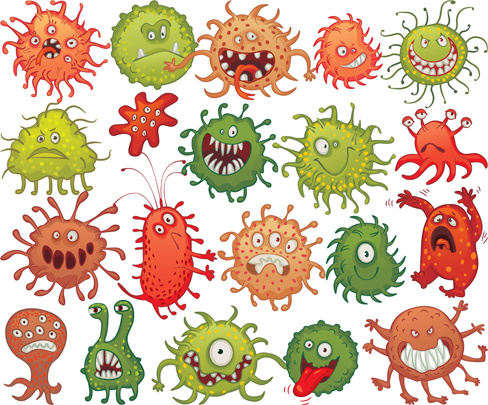

Cf could have started at about 3000BC(when the stone henge was being built)
Dr.Dorothy Hansine first described CF in 1938
In 1989, Dr.Lap-Chee Tsui and his team discovered the gene that causes CF
Life expectancy of CF patients have increased rapidly in the past 40 years.
Life expectancy of a kid with CF was just 18 years 10 years ago. Now it is 35 years
90% of all kids who have CF survive the first year.
There are over 1800 Cf mutations. Which means the infection changes in many ways. This makes it very difficult to cure all forms of cystic fibrosis.
Pinpointing the gene that causes was dicovered recently and many research reamins to be done
Differenct medicines work for different people
Differnt foods work for different people
Problems faced by CF patients are very different
Reasesrch could find better medicines for dealing with CF
Reasearch could stop CF from mutating(changing any further)
Research could find a cure for CF completely
Caucasian(white european) people get Cf more than others
There are 30000 people in U.S.A that has cystic fibrosis, about 1000 kids get CF every year
One in every 15000 african american kids born, have cystic fibrosis
Most cystic fibrosis kids are diagnosed when they are 3 years old
Cf is a heredetary disease. Children of CF patients or carriers get CF
A lot of research is being done to find a cure for cystic fibrosis and god willing, we will find a cure very soon.
Many researchers and scientists are busily working to find a cure.
Research is done in research centers, where many people contribute to the research.
Foundations like the Cystic fibrosis foundation is the world leader in this research.
The USA is one of the countries where many people have cystic fibrosis. One in every four kids born has the chance of getting cystic fibrosis.
You can help by sharing your progress with researchers
You can participate in charity events held to fund CF research